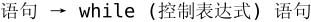
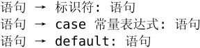

在第5.3节中，我们介绍了用递归求n!的方法，其实每次递归调用都在重复做同样一件事，就是把n乘到(n-1)!上然后把结果返回。虽说是重复，但每次做都稍微有一点区别（n的值不一样），这种每次都有一点区别的重复工作称为迭代（Iteration）。我们使用计算机的主要目的之一就是让它做重复迭代的工作，因为把一件工作重复做成千上万次而不出错正是计算机最擅长的，也是人类最不擅长的。虽然迭代用递归来做就够了，但C语言提供了循环语句使迭代程序写起来更方便。例如factorial用while语句可以写成：
和if语句类似，while语句由一个控制表达式和一个子语句组成，子语句可以是由若干条语句和声明组成的语句块。

如果控制表达式的值为真，子语句就被执行，然后再次测试控制表达式的值，如果还是真，就把子语句再执行一遍，再测试控制表达式的值……这种控制流程称为循环（Loop），子语句称为循环体。如果某次测试控制表达式的值为假，就跳出循环执行后面的return语句，如果第一次测试控制表达式的值就是假，那么直接跳到return语句，循环体一次都不执行。
变量result在这个循环中的作用是累加器（Accumulator），把每次循环的中间结果累积起来，循环结束后得到的累积值就是最终结果，由于这个例子是用乘法来累积的，所以result的初值是1，如果用加法累积则result的初值应该是0。变量n是循环变量（Loop Variable），每次循环都要改变它的值，在控制表达式中要测试它的值，这两点合起来起到控制循环次数的作用，在这个例子中n的值是递减的，也有些循环采用递增的循环变量。这个例子具有一定的典型性，累加器和循环变量这两种模式在循环中都很常见。
可见，递归能解决的问题用循环也能解决，但解决问题的思路不一样。用递归解决这个问题靠的是递推关系n!=n·(n-1)!，用循环解决这个问题则更像是把这个公式展开了：n!=n·(n-1)·(n-2)·…·3×2×1。把公式展开了理解会更直观一些，所以有些时候循环程序比递归程序更容易理解。但也有一些公式要展开是非常复杂的甚至是不可能的，反倒是递推关系更直观一些，这种情况下递归程序比循环程序更容易理解。此外还有一点不同：看图5.2，在整个递归调用过程中，虽然分配和释放了很多变量，但所有变量都只在初始化时赋值，没有任何变量的值发生过改变，而上面的循环程序则通过对n和result这两个变量多次赋值来达到同样的目的。前一种思路称为函数式编程（Functional Programming），而后一种思路称为命令式编程（Imperative Programming），这个区别类似于第1.1节讲的Declarative和Imperative的区别。函数式编程的“函数”类似于数学函数的概念，回顾一下第3.1节所讲的，数学函数是没有Side Effect的，而C语言的函数可以有Side Effect，比如在一个函数中修改某个全局变量的值就是一种Side Effect。第3.4节指出，全局变量被多次赋值会给调试带来麻烦，如果一个函数体很长，控制流程很复杂，那么局部变量被多次赋值也会有同样的问题。因此，不要以为“变量可以多次赋值”是天经地义的，有很多编程语言可以完全采用函数式编程的方式，避免Side Effect，例如LISP、Haskell、Erlang等。用C语言编程主要还是采用Imperative的方式，但要记住，给变量多次赋值时要格外小心，在代码中多次读写同一变量应该以一种一致的方式进行。所谓“一致的方式”是说应该有一套统一的规则，规定在一段代码中哪里会对某个全局变量赋值、哪里会读取它的值，比如在第24.2.4节会讲到访问errno的规则。
递归函数如果写得不小心就会变成无穷递归，同样道理，循环如果写得不小心就会变成无限循环（Infinite Loop）或者叫死循环。如果while语句的控制表达式永远为真就成了一个死循环，例如while (1) {...}。在写循环时要小心检查你写的控制表达式有没有可能取值为假，除非你故意写死循环（有的时候这是必要的）。在上面的例子中，不管n一开始是几，每次循环都会把n减掉1，n越来越小最后必然等于0，所以控制表达式最后必然取值为假，但如果把n = n - 1;这句漏掉就成了死循环。有的时候是不是死循环并不是那么一目了然：
如果n为正整数，这个循环能跳出来吗？循环体所做的事情是：如果n是偶数，就把n除以2，如果n是奇数，就把n乘3加1。一般来说循环变量要么递增要么递减，可是这个例子中的n一会儿变大一会儿变小，最终会不会变成1呢？可以找个数试试，例如一开始n等于7，每次循环后n的值依次是：7、22、11、34、17、52、26、13、40、20、10、5、16、8、4、2、1。最后n确实等于1了。读者可以再试几个数都是如此，但无论试多少个数也不能代替证明，这个循环有没有可能对某些正整数n是死循环呢？其实这个例子只是给读者提提兴趣，同时提醒读者写循环时要有意识地检查控制表达式。至于这个循环有没有可能是死循环，这是著名的3x+1问题，目前世界上还无人能证明。许多世界难题都是这样的：问题的描述无比简单，连小学生都能看懂，但证明却无比困难。
1．用循环解决第5.3节中的所有习题，体会递归和循环这两种不同的思路。
2．编写程序数一下1到100的所有整数中出现多少次数字9。在写程序之前先把这些问题考虑清楚：
⦁ 这个问题中的循环变量是什么？
⦁ 这个问题中的累加器是什么？用加法还是用乘法累积？
⦁ 在第4.2节的习题1写过取一个整数的个位和十位的表达式，这两个表达式怎样用到程序中？
3．如果一个循环体中有这样的语句：
每次循环打印的i值会增加1吗？
do/while语句的语法是：
while语句先测试控制表达式的值再执行循环体，而do/while语句先执行循环体再测试控制表达式的值。如果控制表达式的值一开始就是假，while语句的循环体一次都不执行，而do/while语句的循环体仍然要执行一次再跳出循环。其实只要有while循环就足够了，do/while循环和后面要讲的for循环都可以改写成while循环，只不过有些情况下用do/while或for循环写起来更简便，代码更易读。上面的factorial也可以改用do/while循环来写：
写循环一定要注意循环即将结束时控制表达式的临界条件是否准确，上面的循环控制条件如果写成i < n就错了，当i == n时跳出循环，最后的结果中就少乘了一个n。虽然变量名应该尽可能起得有意义一些，不过用i、j、k给循环变量起名是很常见的。
前两节我们在while和do/while循环中使用循环变量，其实使用循环变量最常见的是for循环这种形式。for语句的语法是：
如果不考虑循环体中包含continue语句的情况（稍后介绍continue语句），这个for循环等价于下面的while循环：
从这种等价形式来看，控制表达式1和3都可以为空，但控制表达式2是必不可少的，例如for (;1;) {...}等价于while (1) {...}死循环。C语言规定，如果控制表达式2为空，则认为控制表达式2的值为真，因此死循环也可以写成for (;;) {...}。
上一节do/while循环的例子可以改写成for循环：
其中++i这个表达式相当于i = i + 1⑫，++称为前缀自增运算符（Prefix Increment Operator），类似地，--称为前缀自减运算符（Prefix Decrement Operator）⑬，--i相当于i=i-1。如果把++i这个表达式看作一个函数调用，除了传入一个参数返回一个值（等于参数值加1）之外，还产生一个Side Effect，就是把变量i的值增加了1。
++和--运算符也可以用在变量后面，例如i++和i--，为了和前缀运算符区别，这两个运算符称为后缀自增运算符（Postfix Increment Operator）和后缀自减运算符（Postfix Decrement Operator）。如果把i++这个表达式看作一个函数调用，传入一个参数返回一个值，返回值就等于参数值（而不是参数值加1），此外也产生一个Side Effect，就是把变量i的值增加了1，它和++i的区别就在于返回值不同。同理，--i返回减1之后的值，而i--返回减1之前的值，但这两个表达式都产生同样的Side Effect，就是把变量i的值减了1。
使用++、--运算符会使程序更加简洁，但也会影响程序的可读性，参考文献[3]中的示例代码大量运用++、--和其他表达式的组合使得代码非常简洁。为了让初学者循序渐进，在接下来的几章中++、--运算符总是单独组成一个表达式而不跟其他表达式组合，从第11章开始将采用参考文献[3]的简洁风格。
我们看一个有意思的问题：a+++++b这个表达式如何理解？应该理解成a++ ++ +b还是a++ + ++b，还是a + ++ ++b呢？应该按第一种方式理解。编译的过程分为词法解析和语法解析两个阶段，在词法解析阶段，编译器总是从前到后找最长的合法Token。把这个表达式从前到后解析，变量名a是一个Token，a后面有两个以上的+号，在C语言中一个+号是合法的Token（可以是加法运算符或正号），两个+号也是合法的Token（可以是自增运算符），根据最长匹配原则，编译器绝不会止步于一个+号，而一定会把两个+号当做一个Token。再往后解析仍然有两个以上的+号，所以又是一个++运算符。再往后解析只剩一个+号了，是加法运算符。再往后解析是变量名b。词法解析之后进入下一阶段语法解析，a是一个表达式，表达式++还是表达式，表达式再++还是表达式，表达式再+b还是表达式，语法上没有问题。最后编译器会做一些基本的语义分析，这时就有问题了，++运算符要求操作数能做左值，a能做左值所以a++没问题，但表达式a++的值只能做右值，不能再++了，所以最终编译器会报错。
C99规定了一种新的for循环语法（其实是从C++借鉴的），在控制表达式1的位置可以有变量定义。例如上例的循环变量i可以只在for循环中定义：
如果这样定义，那么变量i只是for循环中的局部变量而不是整个函数的局部变量，相当于第4.1节讲过的语句块中的局部变量，在循环结束后就不能再使用i这个变量了，注意这个程序用gcc编译时必须加上选项-std=c99。
在第4.4节中我们见到了break语句的一种用法，用来跳出switch语句块，这个语句也可以用来跳出循环体。continue语句也会终止当前循环，和break语句不同的是，continue语句终止当前循环后又回到循环体的开头准备执行下一次循环。对于while循环和do/while循环，执行continue语句之后测试控制表达式，如果值为真则继续执行下一次循环；对于for循环，执行continue语句之后首先计算控制表达式3，然后测试控制表达式2，如果值为真则继续执行下一次循环。例如下面的代码打印1到100之间的素数：
例6.1 求1～100的素数
is_prime函数从2到n-1依次检查有没有能被n整除的数，如果有就说明n不是素数，立刻跳出循环而不执行i++。因此，如果n不是素数，则循环结束后i一定小于n，如果n是素数，则循环结束后i一定等于n。注意检查临界条件：2应该是素数，如果n是2，则循环体一次也不执行，但i的初值就是2，也等于n，在程序中也判定为素数。其实没有必要从2一直检查到n-1，只要从2检查到「sqrt(n)」，如果全都不能整除就足以证明n是素数了，请读者想一想为什么。
在主程序中，从1到100依次检查每个数是不是素数，如果不是素数，并不直接跳出循环，而是i++后继续执行下一次循环，因此用continue语句。注意主程序的局部变量i和is_prime中的局部变量i是不同的两个变量，其实在调用is_prime函数时主程序的局部变量i和参数n的值相等。
1．求素数这个程序只是为了说明break和continue的用法才这么写的，其实完全可以不用break和continue，请读者修改一下控制流程，去掉break和continue而保持功能不变。
2．上一节讲过怎样把for循环改写成等价的while循环，但也提到如果循环体中有continue语句这两种形式就不等价了，想一想为什么不等价了？
上一节求素数的例子在循环中调用一个函数，而那个函数里面又有一个循环，这其实是一种嵌套循环。如果把那个函数的代码拿出来写就更清楚了：
例6.2 用嵌套循环求1～100的素数
现在内循环的循环变量就不能再用i了，而是改用j，原来程序中is_prime函数的参数n现在直接用i代替。在有多层循环或switch嵌套的情况下，break只能跳出最内层的循环或switch，continue也只能终止最内层循环并回到该循环的开头。用循环也可以打印表格式的数据，比如打印小九九乘法表。
例6.3 打印小九九乘法表
内循环每次打印一个数，数与数之间用两个空格隔开，外循环每次打印一行。结果如下：
结果有一位数的有两位数的，这个表格很不整齐，如果把打印语句改为printf("%d\t", i*j);就整齐了，所以Tab字符称为制表符。
1．上面打印的小九九有一半数据是重复的，因为8×9和9×8的结果一样。请修改程序打印这样的小九九：
2．编写函数diamond打印一个菱形。如果调用diamond(3, '*')则打印：
如果调用diamond(5, '+')则打印：
如果用偶数做参数则打印错误提示。
分支、循环都讲完了，现在只剩下最后一种影响控制流程的语句了，就是goto语句，实现无条件跳转。我们知道break只能跳出最内层的循环，如果在一个嵌套循环中遇到某个错误条件需要立即跳出最外层循环做出错处理，就可以用goto语句，例如：
这里的error:叫做标号（Label），任何语句前面都可以加若干个标号，每个标号的命名也要遵循标识符的命名规则。
goto语句过于强大了，从程序中的任何地方都可以无条件跳转到任何其他地方，只要在那个地方定义一个标号就行，唯一的限制是goto只能跳转到同一个函数中的某个标号处，而不能跳到别的函数中⑭。滥用goto语句会使程序的控制流程非常复杂，可读性很差。著名的计算机科学家Edsger W. Dijkstra最早指出编程语言中goto语句的危害，提倡取消goto语句。goto语句不是必须存在的，显然可以用别的办法替代，比如上面的代码段可以改写为：

通常goto语句只用于这种场合，一个函数中任何地方出现了错误条件都可以立即跳转到函数末尾做出错处理（例如释放先前分配的资源、恢复先前改动过的全局变量等），处理完之后函数返回。比较用goto和不用goto的两种写法，用goto语句还是方便很多。但是除此之外，在任何其他场合都不要轻易考虑使用goto语句。有些编程语言（如C++）中有异常（Exception）处理的语法，可以代替goto和setjmp/longjmp的这种用法。
回想一下，我们在第4.4节学过case和default后面也要跟冒号（:号，Colon），事实上它们是两种特殊的标号。和标号有关的语法规则如下：

反复应用这些语法规则进行组合可以在一条语句前面添加多个标号，例如在例4.2的代码中，有些语句前面有多个case标号。现在我们再看switch语句的格式：
{}里面是一组语句列表，其中每个分支的第一条语句带有case或default标号，从语法上来说，switch的语句块和其他分支、循环结构的语句块没有本质区别，因此前面的语法规则可以改写为：
改写后的语法规则更为准确，我们知道{}中的语句列表不仅可以包含语句，还可以包含声明，而前面的语法规则并没有体现出这一点。但要注意，只有语句前面才能带标号，声明前面不能带标号，例如这样写是错的：
但这样写是对的：
这样写也是对的：
再比如这样的switch语句：
这段代码从语法上看是对的，从语义上看却有一个陷阱。变量i在switch语句块中定义，但并不会初始化成10，因为不管n的值是几，进入switch语句块都会跳过给i赋初值的指令，从某一个case标号开始执行。
1．以下代码编译没有问题，但运行结果却和预期不符（不能打印出other number），请分析原因。
2．请在网上查找有关Duff's Device的资料，Duff's Device是一段很有意思的代码，正是利用“switch的语句块和循环结构的语句块没有本质区别”这一点实现了一个巧妙的代码优化。